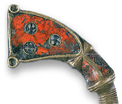

Were masterpieces of Celtic art made using old slag?Rich red enamels decorate outstanding pieces of early medieval Celtic metalwork, such as the suspension mounts of the hanging bowls from the Sutton Hoo ship burial. It was previously assumed that these enamels were specially made. However, analysis of a range of enamels by British Museum scientists reveals that they differ from other coloured glasses of the period, and appear to be the waste from a metal refining process. The Celts appear to have had a penchant for red enamel and its origin has always been something of a mystery, but it has been assumed that a large lump of red glass found in the 1850s in County Meath, Ireland was a block of the raw material. New analyses by Colleen Stapleton, Ian Freestone and Sheridan Bowman, however, reveal that the enamels are not related to the glass technology of the period, nor to the red glass lump. They are very rich in lead and copper, and appear to be the waste by-products, or "slag", of a process used to reclaim silver and gold from scrap metal. The early medieval enamels therefore represent an early example of the recycling of otherwise unwanted material to produce outstanding artwork. The use of slag should in no way be seen to diminish the achievements of the craftsmen, but reflects their skill in selecting the best materials for the task at hand. In fact, the red slag offered some advantages, as it melted at a particularly low temperature and was easier to melt into place than other available glasses. It was sometimes used to 'stick' other colours into place. The investigation was carried out using X-ray microanalysis of the glasses in the scanning electron microscope and X-ray fluorescence analysis in air.
Reference: C.P. Stapleton., I.C. Freestone., and S.G.E Bowman. 1999, 'Composition and Origin of Early Medieval Opaque Red Enamel from Britain and Ireland'. Journal of Archaeological Science 26, 913-921 URL: Article no. jasc.1999.0399, available online at http://www.idealibrary.com More details: www.thebritishmuseum.ac.uk/science/enamels/ Contact: Science@thebritishmuseum.ac.uk
|